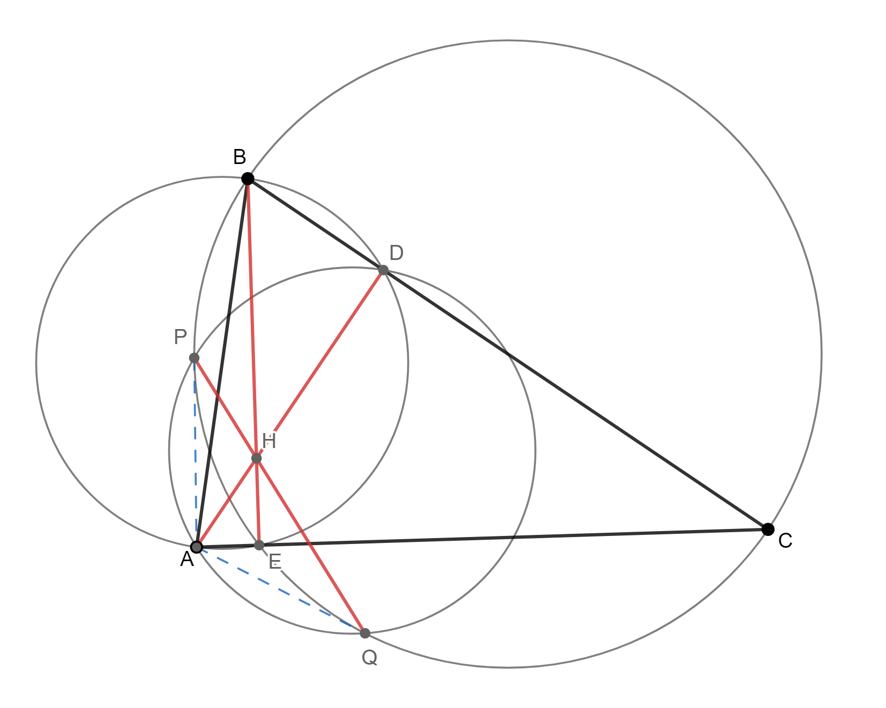

An Incredibly Nice Application of Generating Functions
October 23, 2019
By Bony
I know I said physics next but I wanted to share my solution to Putnam 2001 A2, which I found 2 weeks ago.
1. You have coins \(C_1, C_2, \ldots , C_n\). For each \(k\), \(C_k\) is biased so that, when tossed, it has probability \(1/(2k + 1)\)
of falling heads. If the \(n\) coins are tossed, what is the probability that the number of heads is odd?
Express the answer as a rational function of \(n\).
Solution
We claim that the desired probability is $$P_n = \frac{n}{2n+1}.$$
If we take \(x\) to represent tossing a head, the generating function for \(C_k\) is $$f_k(x) = \frac{1}{2k+1}(x+2k).$$ Hence the
generating function for tossing all \(n\) coins is $$F_n(x) = \prod_{k=1}^{n}f_k(x) = \prod_{k=1}^{n} \frac{1}{2k+1}(x+2k).$$
We seek the sum of all the coefficients of the odd powers of \(x\) in \(F_n(x)\). We can do this by evaluating $$\frac{F_n(1)-F_n(-1)}{2}$$
because by the nature of polynomials, \(F_n(1)\) is the sum of the coefficients and \(F_n(-1)\) is the sum of the coefficients with all
odd powers flipped. Thus,
\begin{align*}
P_n &= \frac{(3)(5)\cdots(2n+1) - (1)(3)\cdots(2n-1)}{2(3)(5)\cdots(2n+1)} \\
&= \frac{(2n+1)-1}{2(2n+1)} \\
&= \frac{n}{2n+1}.
\end{align*}
Remark
I say this is an incredibly nice application for the following reasons: normally, generating functions as applied to enumerative combinatoricsare
are associated with laborious expansion of terms, and also we always think of \(x\) as a "placeholder variable" that isn't meant to be evaluated.
But in this case, neither of those are true. We use the extra structure provided by polynomials to evaluate the sum of all the odd powered coefficients,
which I thought was cool.
The motivation for using generating functions actually came from doing casework. For example, take \(n=3\). I noticed that the probability
to toss 1 head is /(\frac{(1)(4)(6)+(2)(1)(6)+(2)(4)(1)}{(3)(5)(7)}\) and the probability of tossing 3 heads is \(\frac{1}{(3)(5)(7)}\). The
symmetric sums reminded me of Vieta's formulas on a polynomial with roots \(2, 4, 6, \ldots\), and the rest fell into place. Overall a
pretty nice problem.
Math Post 3
July 28, 2019
By Bony
Here are some math problems I solved recently, roughly in order of difficulty. The next post will be physics.
1. In triangle \(ABC\), cevians \(AD\), \(BE\), and \(CF\) are concurrent at \(P\). Prove that $$\frac{PD}{AD}+\frac{PE}{BE}+\frac{PF}{CF}=1.$$
Solution
This is a straightforward area ratio chase. Let \([XYZ]\) denote the area of a polygon \(XYZ\). Then we have
\(\frac{PD}{AP} = \frac{[PBC]}{[ABC]}\), \(\frac{PE}{BE} = \frac{[APC]}{[ABC]}\), and \(\frac{PF}{CF} = \frac{[AFB]}{[ABC]}\)
from the fact that areas are in the same ratio as line segments. Summing these gives the desired result, as \(\triangle PBC\),
\(\triangle APC\), and \(\triangle AFB\) are disjoint and cover all of triangle \(ABC\).
2. A regular n-gon with vertices \(A_1, A_2, \dots A_n\) is inscribed in a circle, and \(P\) is an arbitrary point on the same circle.
Show that $$\sum_{k=1}^{n} |PA_k|^2$$ is constant for all \(P\).
Solution
Without loss of generality, set the \(n^\textrm{th}\) roots of unity as the polygon. Let \( A_k = z^k\), where \(z^n = 1\). Then,
\begin{align*}
|PA_k|^2 &= (p-z^k)(\bar{p}-\bar{z}^2) \\
&= 2 - p \bar{z} - \bar{p}z \\
&= 2 - p \bar{z} - \frac{z}{p}
\end{align*}
where in the last line we have used the fact that \(z \bar{z} =1\) for all \(|z|=1\). The desired sum is therefore
\begin{align*}
\sum_{k=1}^{n}2 - \sum_{k=1}^{n} p \bar{z} - \sum_{k=1}^{n} \frac{z}{p} &= 2n - p\sum_{k=1}^{n} \bar{z} - \frac{1}{p}\sum_{k=1}^{n} z \\
&= 2n
\end{align*}
where we have used the fact that \(\sum_{k=1}^{n} z = \sum_{k=1}^{n} \bar{z} = 0\). This easily follows from Vieta on
\(z^n-1=0\), which shows that the sum of the roots of unity is \(0\) (in general a very useful fact). Thus, the sum is independent
of p, as desired.
3. Let \(z^n = 1\), where \(n\) is an odd positive integer. Prove that $$\sum_{k=0}^n \frac{1}{z^k+1} = \frac{n}{2}.$$
Solution
Note that \(z^k = \frac{1}{z^{n-k}}\) for all \(k\). Therefore, we can pair up the terms (except the last one) in the following manner:
\begin{align*}
&= \frac{1}{z+1} + \frac{1}{z^2+1} + \frac{1}{z^3+1} + \dots + \frac{1}{z^{n-3}+1} + \frac{1}{z^{n-2}+1} + \frac{1}{z^{n-1}+1} \\
&= \frac{1}{z+1} + \frac{1}{z^2+1} + \frac{1}{z^3+1} + \dots + \frac{1}{\frac{1}{z}+1} + \frac{1}{\frac{1}{z^2}+1} + \frac{1}{\frac{1}{z^3}+1} \\
&= \frac{1}{z+1} + \frac{1}{z^2+1} + \frac{1}{z^3+1} + \dots + \frac{z}{z+1} + \frac{z^2}{z^2+1} + \frac{z^3}{z^3+1} \\
\end{align*}
Written this way, it's obvious we should pair the \(k^{\textrm{th}}\) term with term \(n-k-1\) because they add to \(1\). Since \(n\) is odd,
there are \(\frac{n-1}{2}\) such pairs, which sum to \( \frac{n-1}{2} \). Finally, we tack on the very last term, which is just \( \frac{1}{2} \)
because \(z^n=1\), and we're done.
Remark
After struggling with this problem for 20 minutes, I thought of the solution (pairing the terms) in the middle of eating dinner. Some advice: eat dinner
and you'll solve more math problems.
4. Let \(H\) be the orthocenter of triangle \(ABC\). The tangents from \(A\) to the circle with diameter \(BC\) touch the circle at
\(P\) and \(Q\). Prove that \(P\), \(Q\), and \(H\) are collinear.
Solution

Let \(D\) and \(E\) be the feet of the altitudes from \(A\) to \(BC\) and \(B\) to \(AC\), respectively. Let \(\omega_1\)
be the circle with diameter \(BC\), \(\omega_2\) be the circumcircle of \(\triangle ABE\), and \(\omega_3\) be the circumcircle
of \(\triangle APQ\).
Claim: \(E\) lies on \(\omega_1\) and \(D\) lies on \(\omega_2\)
Proof: Equal right angles, so cyclic quadrilateral. Analagous reasoning for the second part of the claim.
By the radical axis theorem on \(\omega_1\), \(\omega_2\), and \(\omega_3\), we find that \(PQ\), \(AD\), and \(BE\) are concurrent.
Since \(AD \cap BE = H\) and they intersect on \(PQ\), it follows that \(P\), \(Q\), and \(H\) are collinear.
Remark
Cool problem with a very short solution, though somewhat easy in retrospect. Radical axis theorem solutions usually go like that, where the difficulty is finding the 3 circles.
This was from the 1996 Chinese National Olympiad.
Math Post 1
July 16, 2019
By Bony
Now for some math. Let's compute \( \cos{72^{\circ}} \).
First, note that \( 72^{\circ} = \frac{2}{5} \pi \). Recall that the fifth roots of unity are given by \( z^5 = 1 \), or
$$z = e^{\frac{2}{5} \pi k}, \; k \in \{0, 1, 2, 3, 4\}$$
From now on, we define \( z := e^{\frac{2}{5} \pi} \) and \( y := \cos{ \left(\frac{2}{5} \pi \right)} \).
Therefore, using Euler's identity,
\begin{align*}
y &= \textrm{Re} (z) \\
&= \frac{1}{2} (z + \bar{z}) \\
&= \frac{1}{2} \left( z+ \frac{1}{z} \right)
\end{align*}
We can factor the first equation as
$$(z-1)(z^4 + z^3 + z^2 + z + 1) = 0$$
We discard the first factor, as clearly \( z \ne 1\). Now, we apply the classic trick when dealing with polynomials that have symmetric
coefficients. We divide both sides by \(z^2\) (which we can do because \( z \ne 0 )\), which gives
$$ \left( z^2 + \frac{1}{z^2} \right) + \left(z + \frac{1}{z} \right) + 1 = 0$$
This can be rewritten in terms of \( y \) with some quick manipulation. Note that \( (2y)^2 = z^2 + \frac{1}{z^2} + 2 \), so
$$(4y^2 - 2) + 2y + 1 = 0$$
Solving this quadratic gives us our desired result: \( y = \frac{-1 \pm \sqrt{5}}{4} \). Since \( \frac{2}{5} \pi \) is in quadrant \(1\),
we discard the negative root, leaving us with $$\cos{72^{\circ}} = \frac{-1 + \sqrt{5}}{4}$$
We can now find \( \cos{36^{\circ}} \) using the half-angle formula for cosine. As a corollary of that, we can compute the cosine of
any integer multiple of \( 36^{\circ} \) using the Chebyshev Polynomials of the First Kind if we wanted to. Also, note the resemblance
to the golden ratio \( \phi = \frac{1+\sqrt{5}}{2} \). It is easy to see that \( \cos{72^{\circ}} = \frac{\phi-1}{2} \).
As a final note, there
is an easier way to obtain the same result using geometric methods. It involves an isosceles triangle wih angles of \(36^{\circ} \),
\(36^{\circ} \), and \(72^{\circ} \). Draw the angle bisector of one of the smaller angles, and use the angle bisector theorem and the
cosine law to finish.